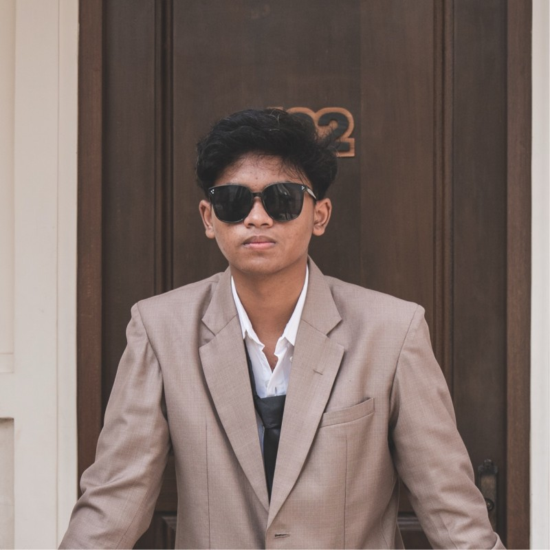

01
Meningkatkan Kesadaran
Membantu masyarakat memahami pentingnya air bersih dan sanitasi yang layak bagi kesehatan serta kehidupan sehari-hari.
SDG 6 — AIR BERSIH DAN SANITASI LAYAK
Kami percaya bahwa air bersih merupakan bagian penting dari kehidupan. Melalui website ini, kami mengajak masyarakat untuk memahami pentingnya air bersih dan mulai menjaga sumber air dari kebiasaan sehari-hari.
Kenali Tujuan Kami
MENGAPA KAMI HADIR?
Air digunakan untuk minum, memasak, membersihkan diri, dan berbagai aktivitas sehari-hari. Namun, pencemaran dan penggunaan air yang berlebihan dapat mengancam ketersediaan air bersih.
Karena itu, website Air Bersih Untuk Semua hadir sebagai media edukasi yang menyajikan informasi, artikel, dan panduan sederhana agar pengunjung dapat ikut berperan dalam menjaga air bersih.
LANGKAH KAMI
Dimulai dari pengetahuan, dilanjutkan dengan tindakan sederhana.
Membantu masyarakat memahami pentingnya air bersih dan sanitasi yang layak bagi kesehatan serta kehidupan sehari-hari.
Menyajikan informasi yang mudah dipahami tentang sumber air, pencemaran, dan cara menjaga kualitas air.
Mengajak pengunjung menghemat air, mengurangi pencemaran, dan menjaga lingkungan mulai dari hal-hal kecil.
DUKUNGAN TERHADAP SDG 6
Website ini mengangkat semangat Tujuan Pembangunan Berkelanjutan atau Sustainable Development Goals (SDGs), khususnya tujuan ke-6, yaitu memastikan ketersediaan serta pengelolaan air bersih dan sanitasi yang berkelanjutan untuk semua.
Pelajari tentang Air BersihGunakan air dengan bijak, hindari membuang sampah ke sumber air, dan ajak orang di sekitar untuk ikut menjaga lingkungan.
Lihat Tips & PanduanTIM
Website ini dikerjakan sebagai tugas UTS Mata Kuliah Pemrograman Web.

2515091072
Membuat halaman Beranda, menyusun navbar dan hero section, serta menyiapkan CSS utama agar warna dan layout konsisten.
2515091101
Membuat halaman Edukasi dan Tips & Panduan serta menulis materi tentang air bersih, konservasi, dan sanitasi.
2515091134
Membuat halaman Artikel dan Tentang, menyusun konten informasi, serta menambahkan tim penyusun dan referensi.
REFERENSI
Referensi untuk mempelajari air bersih, sanitasi, dan pengelolaan sumber daya air.
TUJUAN PEMBANGUNAN BERKELANJUTAN
Informasi mengenai tujuan global untuk memastikan ketersediaan air bersih dan sanitasi layak bagi semua.
Kunjungi sumber ↗KESEHATAN DAN AIR MINUM
Informasi mengenai air minum, kualitas air, sanitasi, dan kebersihan.
Kunjungi WHO ↗AIR, SANITASI, DAN KEBERSIHAN
Informasi tentang akses air bersih, sanitasi, serta kebiasaan kebersihan untuk mendukung kesehatan masyarakat.
Kunjungi UNICEF ↗